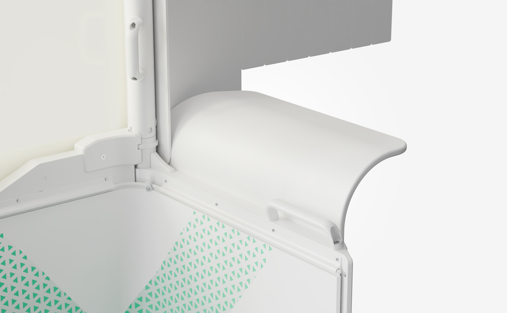

Protects against
radiation injuries
Prevent occupational diseases (cancer, cataract, cognitive disorders, DNA damage and other X-ray-exposure-related conditions).
Step into the future of safety with NOVA-X — the world’s first full-body, team-wide protection system that reduces radiation exposure by up to 90 %, without the burden of lead aprons.

DISCOVER HOW NOVA-X PROTECTS YOU
Prevent occupational diseases (cancer, cataract, cognitive disorders, DNA damage and other X-ray-exposure-related conditions).
50 % of interventionalists suffer from MSDs.
Transition toward lead-free procedures.
Encourages interventionalists to perform more complex, distal and longer procedures for the patient’s benefit.
Reduces sick leave due to occupational hazards.
Decreases stress and fatigue among cath-lab staff.
Promotes engagement of women in interventional careers.
Interventional Cardiologist
Prevent occupational diseases (cancer, cataract, cognitive disorders, DNA damage and other X-ray related conditions).
Vascular Surgeon
50 % of interventionalists suffer from MSDs. NOVA-X helps the transition toward lead-free procedures.
Interventional Radiologist
Encourages me to perform more complex, distal and longer procedures for the patient’s benefit.
EP Consultant
Reduces sick-leave due to occupational hazards and improves team engagement in the cath-lab.
Cath-lab Director
Stress and fatigue dramatically decreased after deploying NOVA-X in our daily practice.
Interventional Cardiologist
Promotes engagement of women in interventional careers by removing the burden of heavy lead.
Experience unmatched radiation protection with unique patented materials offering 2 mm lead equivalency.
These ceiling-mounted glass panels made from patented lead-free Novashield glass® protect against scattered radiation from the ceiling, which is often underestimated in the cath lab.
This stress-resistant material offers perfect patient vision thanks to its high transparency and provides a 2 mm lead equivalence optimally protecting the entire team.
These flexible lead-free shutters ensure optimal radiation protection against scattered radiation from the patient. Thanks to their flexibility, the shutters can be adjusted for each patient’s profile.

Dosicath® monitors real-time doses… LaserGuard® visually indicates protected zones.
This proprietary technology displays real-time received doses inside and outside of the system. It allows for immediate corrective actions in case of dose leakage caused by incorrect system positioning. All doses can also be recorded and stored on a dedicated platform for each procedure.
This proprietary technology, specifically designed for Nova-X®, delineates a zone on the floor where radiation protection is effective for Healthcare providers. Nova-X® is the only full-body radiation protection system offering this key safety feature.

Nova-X offers outstanding ergonomics to limit its footprint and ensure perfect fit with any cath-lab.
Thanks its flexible frame and specially designed front wheels, Nova-X® is compatible with bi-plane c-arms (all incidences) and with any imaging system.
This proprietary technology ensures effortless mobility (4kg) for all users, allowing smooth and precise movement at a controlled speed, with minimal bulk thanks to a triple rotation axis system. This system also ensures effortless small movements during the procedure
Founded in 2024, Cathpax designs, develops and commercialises innovative, full-body, team-wide radiation-protection systems for cath-lab staff during interventional procedures. As part of the Lemer Pax group, the company leverages more than 50 years of innovation in the radiation-protection field. A pioneer in ionising-radiation protection since the 1970s, Lemer Pax has spent the past two decades developing groundbreaking innovations to advance its mission of Protecting Life®. The group has created cutting-edge radiation-protection materials and technologies used in thousands of products worldwide. Today, Lemer Pax covers three major areas of expertise through three entities: Lemer Pax (civilian-nuclear sector, radiopharmacy, nuclear medicine and radiology), GMP (therapy-radioisotope production) and Cathpax (interventional medicine).
Developed over more than ten years of R&D, Nova-X® is Cathpax’s second-generation radiation-protection system. Protected by 16 patents, Nova-X® is currently the only available solution on the market providing 2 mm lead equivalence. The system features a unique dose-monitoring module that displays real-time dose attenuation (Dosicath®) and a built-in laser that projects two green beams onto the floor, clearly marking a safety zone to ensure full protection of healthcare providers (LaserGuard®).
Thanks to these unique features, Nova-X® drastically improves
cath-lab staff safety and comfort, promoting stress-free working conditions
through efficient full-body and team-wide protection against radiation
injuries—ultimately benefiting patients. Nova-X® received
CE-Mark certification in 2024, and the company expects FDA approval by the
end of 2025. Preliminary clinical evaluation has shown that, without lead
aprons, the dose received with Nova-X® is equivalent to the
natural dose measured in the control room. A multicentre prospective
clinical study is under way to provide further evidence that
Nova-X® enables safe lead-free procedures.
Based in Nantes, France, Cathpax aims to become the world leader in
full-body, team-wide radiation protection for interventional medicine in
the coming years.